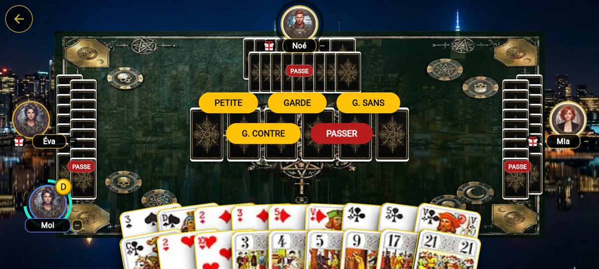

広告なし：画面に出るのは必要なものだけ
タロットの一局は流れが命です。観察し、数え、三枚目に落ちた切り札を覚えておく。配札の合間に割り込む表示は、その糸を断ち切ります。広告なしマルチプレイのタロットゲームなら中断がなく、計算が終われば次の配札が始まります。
Tarot Gothique 2026では、この約束の範囲が明確です。Windows上で、購入したアカウントに適用され、一年で切れることはありません。ブラウザ、Linux、Androidの無料版は広告で運営され、一局の後にだけ表示されます。
ほかの版に広告がある理由
利用者の負担がゼロだからです。保守、サーバー、更新には費用がかかり、広告がそれを賄います。PC版を買っても、スマートフォンの表示は消えません。

マルチプレイ卓：賭けから最後のトリックまで
人数と、200から2,000トークンの賭けを選びます。マルチプレイは空いている相手を探します。全員が順番に、パスからGarde contreまで宣言します。最も大胆な人が、単独で、または五人戦で呼ばれたキングが示す秘密の味方とともに、残りの人と戦います。
五人タロット、同盟の世界
最初は誰が味方か分かりません。絶妙な瞬間の高得点札は味方を明かし、切り札を出さなければ疑われます。この不確かさこそマルチプレイの醍醐味です。機械が相手なら計算し、人が相手なら読み合います。

空席を埋めてくれるゲーム
新しいサービスでは、午前三時に見知らぬ四人がそろうとは限りません。待たせる代わりに、空いた席をコンピューターが担当します。タロットはすぐ始まり、友人は次の局から参加できます。
プライベートなマルチプレイ：相手を選ぶ
プライベート卓はチャットやプロフィールから作れます。賭けを決めて招待を送ると、カウントダウンが返事を待ちます。パソコン、ブラウザ、Androidのどこからでも参加でき、マルチプレイ卓は全版共通、購入は不要です。
タロット卓を離れずに会話
挨拶やお祝いには定型文と絵文字で十分です。局の外では通常のキーボードも使え、海外の人向けの翻訳もあります。不適切なメッセージは二回のタップで通報できます。
オンラインゲーム：トークンの役割
このタロットゲームのトークンは賭けに使うもので、現実の価値はありません。勝利、毎日のボーナス、スマートフォンの短い動画で増えます。Windows版の購入で100,000枚。年末は割引コードで二倍になります。
タロットで負けても破産しない
トークンが尽きても、コンピューター戦は賭けなしで遊べます。自信を取り戻し、危険なGardeを試して、またマルチプレイへ戻りましょう。

広告なしで過ごす三日間の大会
金曜は予選、土曜は本大会、日曜は決勝です。タロット卓は五席。順位は即時に更新され、表彰台に入るとトークンがもらえます。参加費は通常200枚ですが、PC版の購入者は六か月、12月の特典では一年間無料です。
夜更かし不要のゲーム
夜の受付は深夜前に締め切られ、日中の好きな時間に対局できます。週末をまるごと空ける必要はありません。
定期課金なし：手元に残るゲーム
支払いは一度きり、月額はありません。開発が続く限り、Windowsの新しい版も追加料金なしで届きます。店で買った箱に、修正まで付いてくるようなものです。
広告なしでタロットの記憶力が生きる
切り札を数え、ハートを切った人を覚え、捨て札を読む。タロットは集中力に報います。割り込みがなければ、集中は次の局まで続きます。一人なら小さな差でも、全員がミスを待つマルチプレイでは大きな快適さです。初心者も落ち着いて計算を読み返し、敗因を理解できます。
無料ゲームから広告なしゲームへ
移行しても失うものはありません。アカウントも友人もトークンもそのまま。購入版は初回ログインでプロフィールを認識し、続きから遊べます。今度は広告なしです。
このマルチプレイ・タロットが向く人
広告が気になる常連の方、家族で一台を使う家庭、遠くの友人と定期的に遊びたい元クラブ会員の方へ。月に二局ほどなら、無料ゲームで十分です。まずブラウザでお試しください。
広告と卓についての短い回答
接続は必要ですか。 マルチプレイには必要です。購入の認識はパソコンに保存されます。
スマートフォンの広告も消えますか。 いいえ、Windows版だけです。
二台で一つのアカウントは使えますか。 それぞれ購入時のアカウントでログインしてください。
制作者による文章です。文章と雰囲気の画像は人工知能の助けを借りています。画面はコンピューター戦のもので、表示はフランス語です。